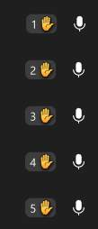

Randomized Round-table
Those 15-minute stand-ups that drag on
Have you ever been part of a stand-up where it’s the same process every day? One person gets picked or volunteers to start, and they choose the same one or two people who prefer the same one or two people ad nauseam.
You can almost guarantee when you’ll be chosen with enough accuracy to ignore stand-up until you hear your name. Sometimes, tangents take over, and the meeting ends before you even get to speak.
Not paying attention is familiar with this stand-up style, and a pitfall of that is a lethargic daily scrum with very little interaction and collaboration.
Walk/Speak the board
One route to stop the above is not doing a round-robin stand-up. Pull up the board and go over the tickets one by one. This method works but can create a lopsided scrum when someone decides to use this time as a design or debugging session.
Eventually, it could foster a more dynamic meeting with the potential for collaboration.
Using tools to aid
Another route is to use tools to provide a more randomized daily scrum.
Microsoft Teams
Teams has a “hand-raising” functionality to virtually raise your hand. While doing so, you are assigned a first-come-first-served number and go in order from there.
Provided not the same people click the button in the same order every day, this is a pretty decent alternative.
Random Round-table
My tool, Team Member Picker, is a self-contained online/offline arbitrary person picker.
A scrum master loads up the roster list (JSON, stored in local browser cache) and lets the randomizer pick the team members one by one, reminiscent of the game show Press Your Luck.

Now you can’t tell when you’ll be next, so you’ll pay more attention and be prepared before stepping into stand-up. Plus, it adds a little bit of fun.
Or you could just speak to the board; that’s still an option.
Try out Team Picker in your browser right now.
Download roster-test.json from the github repository, modify to your liking, then run it with: https://gregfrazier.github.io/team-member-picker/team-picker.html
The application is entirely self-contained on your local device. The JSON file is never uploaded or stored remotely.